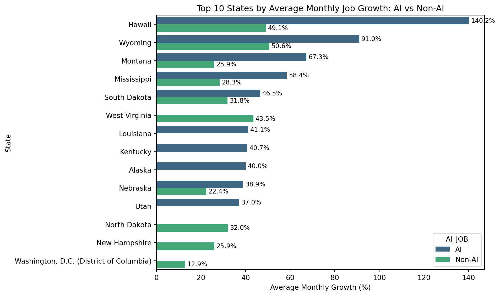
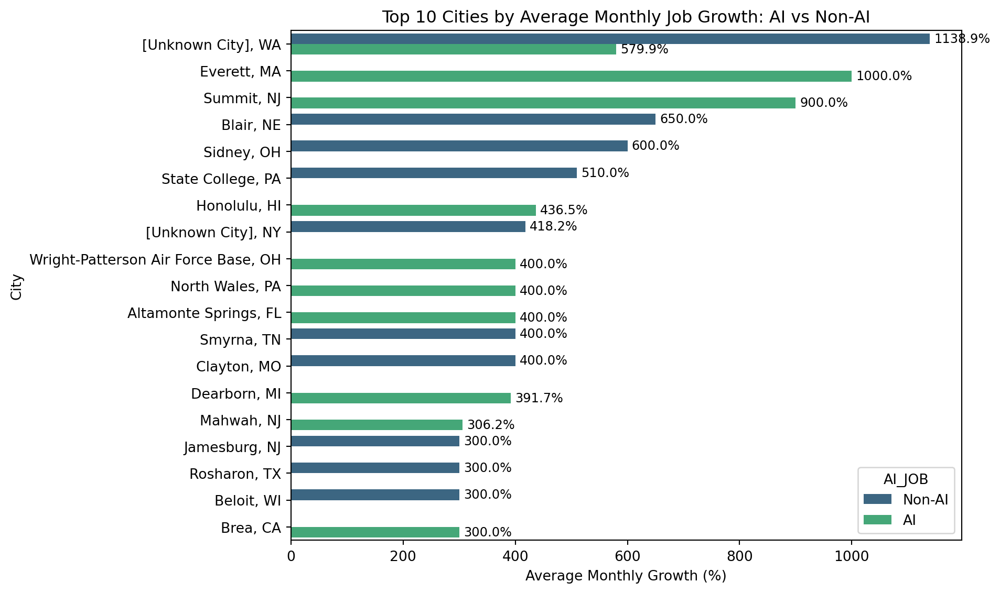
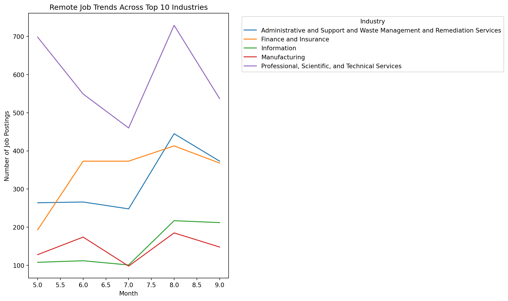
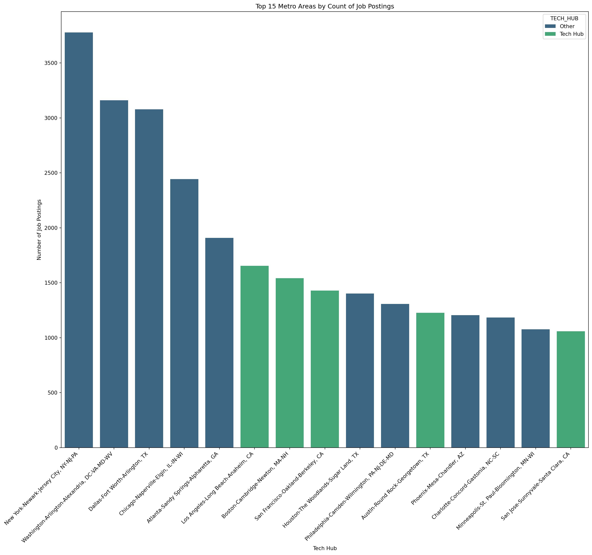
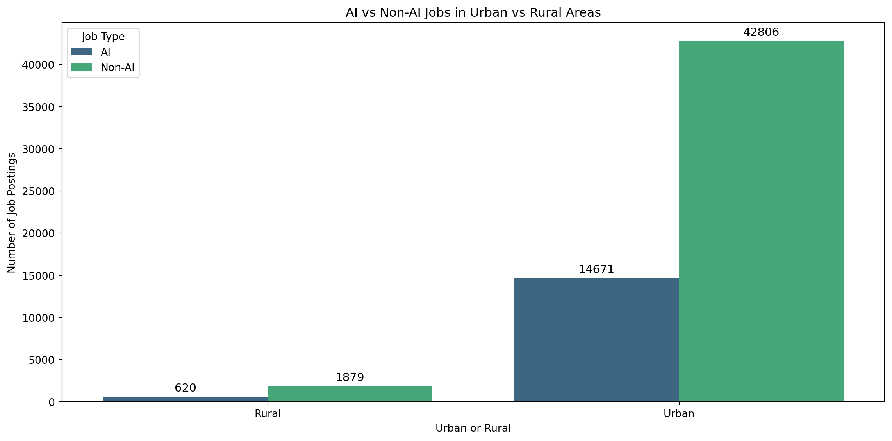
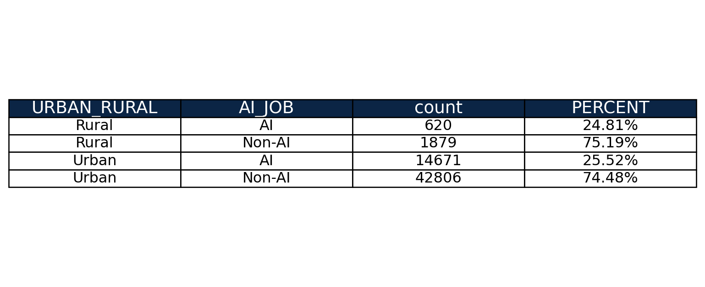

Comprehensive Data Cleaning & Exploratory Analysis of Geographic Data
Authors
Dakota Alder
Julio Garcia
1 Load and Preview LightCast Data
from pyspark.sql import SparkSession# Start a Spark sessionspark = SparkSession.builder.appName("JobPostingsAnalysis").getOrCreate()# Load the CSV file into a Spark DataFramedf = spark.read.option("header", "true").option("inferSchema", "true").option("multiLine","true").option("escape", "\"").csv("../data/lightcast_job_postings.csv")
WARNING: Using incubator modules: jdk.incubator.vector
Using Spark's default log4j profile: org/apache/spark/log4j2-defaults.properties
Setting default log level to "WARN".
To adjust logging level use sc.setLogLevel(newLevel). For SparkR, use setLogLevel(newLevel).
25/10/16 06:57:32 WARN NativeCodeLoader: Unable to load native-hadoop library for your platform... using builtin-java classes where applicable
[Stage 1:> (0 + 1) / 1]
2 Drop unnecessary columns
Redundant or irrelevant columns are dropped here.
NAICS and SOC levels are removed because each job is already described by its most detailed (and most general) industry and occupation classification (NAICS_2022_6_NAME and SOC_6_NAME).
Timestamps and system variables (like LAST_UPDATED_TIMESTAMP) are not meaningful.
Simplifying the dataset this way speeds up our processing and makes the whole dataframe look more clean and user-friendly.
[Stage 2:> (0 + 1) / 1] 25/10/16 06:57:55 WARN SparkStringUtils: Truncated the string representation of a plan since it was too large. This behavior can be adjusted by setting 'spark.sql.debug.maxToStringFields'.
[Stage 3:> (0 + 1) / 1]
3 Handle Missing Values
We also cleaned categorical values
Missing categorical data (like City, Company, State) were replaced with “Unknown” so that there is data in all rows. Duplicates were also dropped to not skew the analysis. Salary missing values were replaced with the median salary. Remote Type Name and Employment type were simplified into smaller groupings.
4 Helper Columns for classifying AI and Posted Dates
We created columns to classify what job titles may be affected by AI vs Non-AI Job Titles We created a column for the month that the job was posted in order to create growth data
#New Column to Classify AI Jobs and Add Month of Posting Dateai_keywords = ["AI", "Machine Learning", "Data Scientist", "Data Analyst", "ML", "Artificial Intelligence", "Deep Learning", "NLP", "Predictive Analytics"]#Function to classify AI vs Non-AI Jobsdef classify_ai(title): title_lower =str(title).lower()for keyword in ai_keywords:if keyword.lower() in title_lower:return"AI"return"Non-AI"clean_pdf["AI_JOB"] = clean_pdf["TITLE_RAW"].apply(classify_ai)clean_pdf["POSTED"] = pd.to_datetime(clean_pdf["POSTED"], errors="coerce")clean_pdf["POSTED_MONTH"] = clean_pdf["POSTED"].dt.month#clean_pdf.head(25)
5 City and State Analysis by AI vs Non-AI Jobs
Key Insights:
#Question 1 Visualization: Which Cities or States have the highest job growth for AI vs Non-AIcount_by_month_state = ( clean_pdf.groupby(["STATE_NAME", "POSTED_MONTH", "AI_JOB"]) .size() .reset_index(name="count"))count_by_month_city = ( clean_pdf.groupby(["CITY_NAME", "POSTED_MONTH", "AI_JOB"]) .size() .reset_index(name="count"))#Measure job growth by State and then by citycount_by_month_state = count_by_month_state.sort_values(["STATE_NAME", "AI_JOB", "POSTED_MONTH"])count_by_month_state["GROWTH"] = ( count_by_month_state .groupby(["STATE_NAME", "AI_JOB"])["count"] .pct_change() *100)count_by_month_city = count_by_month_city.sort_values(["CITY_NAME", "AI_JOB", "POSTED_MONTH"])count_by_month_city["GROWTH"] = ( count_by_month_city .groupby(["CITY_NAME", "AI_JOB"])["count"] .pct_change() *100)avg_growth_state = ( count_by_month_state.groupby(["STATE_NAME", "AI_JOB"])["GROWTH"] .mean() .reset_index() .dropna() .sort_values("GROWTH", ascending=False))avg_growth_city = ( count_by_month_city.groupby(["CITY_NAME", "AI_JOB"])["GROWTH"] .mean() .reset_index() .dropna() .sort_values("GROWTH", ascending=False))print("Top 10 States by AI Job Growth:")print(avg_growth_state[avg_growth_state["AI_JOB"] =="AI"].head(10))print("\nTop 10 States by Non-AI Job Growth:")print(avg_growth_state[avg_growth_state["AI_JOB"] =="Non-AI"].head(10))print("Top 10 Cities by AI Job Growth:")print(avg_growth_city[avg_growth_city["AI_JOB"] =="AI"].head(10))print("\nTop 10 Cities by Non-AI Job Growth:")print(avg_growth_city[avg_growth_city["AI_JOB"] =="Non-AI"].head(10))import matplotlib.pyplot as pltimport seaborn as snsstate_visual = avg_growth_state.groupby("AI_JOB").head(10)plt.figure(figsize=(10,6))ax_state = sns.barplot(data=state_visual, y="STATE_NAME", x="GROWTH", hue="AI_JOB", palette="viridis")plt.title("Top 10 States by Average Monthly Job Growth: AI vs Non-AI")plt.xlabel("Average Monthly Growth (%)")plt.ylabel("State")for container in ax_state.containers: ax_state.bar_label(container, fmt="%.1f%%", label_type="edge", padding=3, fontsize=9)plt.tight_layout()plt.savefig("../ad688_group6_geographic_analysis/images/top10state.png", dpi=300)plt.show()city_visual = avg_growth_city.groupby("AI_JOB").head(10)plt.figure(figsize=(10,6))ax_city = sns.barplot(data=city_visual, y="CITY_NAME", x="GROWTH", hue="AI_JOB", palette="viridis")plt.title("Top 10 Cities by Average Monthly Job Growth: AI vs Non-AI")plt.xlabel("Average Monthly Growth (%)")plt.ylabel("City")for container in ax_city.containers: ax_city.bar_label(container, fmt="%.1f%%", label_type="edge", padding=3, fontsize=9)plt.tight_layout()plt.savefig("../ad688_group6_geographic_analysis/images/top10city.png", dpi=300)plt.show()
Top 10 States by AI Job Growth:
STATE_NAME AI_JOB GROWTH
20 Hawaii AI 140.217803
100 Wyoming AI 90.990260
50 Montana AI 67.291667
46 Mississippi AI 58.393822
80 South Dakota AI 46.527778
34 Louisiana AI 41.077075
32 Kentucky AI 40.737045
2 Alaska AI 40.043290
52 Nebraska AI 38.870132
86 Utah AI 36.988636
Top 10 States by Non-AI Job Growth:
STATE_NAME AI_JOB GROWTH
101 Wyoming Non-AI 50.555556
21 Hawaii Non-AI 49.105634
97 West Virginia Non-AI 43.492753
67 North Dakota Non-AI 32.006313
81 South Dakota Non-AI 31.818182
47 Mississippi Non-AI 28.331625
57 New Hampshire Non-AI 25.913029
51 Montana Non-AI 25.904481
53 Nebraska Non-AI 22.365222
95 Washington, D.C. (District of Columbia) Non-AI 12.850958
Top 10 Cities by AI Job Growth:
CITY_NAME AI_JOB GROWTH
1366 Everett, MA AI 1000.000000
4155 Summit, NJ AI 900.000000
4876 [Unknown City], WA AI 579.875000
1964 Honolulu, HI AI 436.507937
4743 Wright-Patterson Air Force Base, OH AI 400.000000
3133 North Wales, PA AI 400.000000
82 Altamonte Springs, FL AI 400.000000
1072 Dearborn, MI AI 391.666667
2532 Mahwah, NJ AI 306.250000
474 Brea, CA AI 300.000000
Top 10 Cities by Non-AI Job Growth:
CITY_NAME AI_JOB GROWTH
4877 [Unknown City], WA Non-AI 1138.925972
396 Blair, NE Non-AI 650.000000
3974 Sidney, OH Non-AI 600.000000
4106 State College, PA Non-AI 510.000000
4851 [Unknown City], NY Non-AI 418.161765
4003 Smyrna, TN Non-AI 400.000000
822 Clayton, MO Non-AI 400.000000
2101 Jamesburg, NJ Non-AI 300.000000
3720 Rosharon, TX Non-AI 300.000000
323 Beloit, WI Non-AI 300.000000


5.1 Key Insights
The analysis shows that AI jobs postings are increasing at a higher rate than Non-AI jobs, and that is especially true in Hawaii, Wyoming, Montana, and Mississippi. However, there seems to be no AI Job growth in multiple states, and an increase in Non-AI jobs in those same states, suggesting that AI isn’t quite yet displacing jobs. In fact, there are only a select few states where AI Jobs are increasing, most of the 50 states have an increase in Non-AI jobs.
6 Remote Job Growth by Industry
Key Insights:
#Question 2: Are remote jobs increasing or decreasing across industries?remote_only = clean_pdf[clean_pdf["REMOTE_TYPE_NAME"] =="Remote"]remote_growth = ( remote_only.groupby(["NAICS_2022_2_NAME", "POSTED_MONTH"]) .size() .reset_index(name="count"))top_5_industries = ( remote_only["NAICS_2022_2_NAME"] .value_counts() .head(5) .index)top_remote_growth = remote_growth[remote_growth["NAICS_2022_2_NAME"].isin(top_5_industries)]import seaborn as snsimport matplotlib.pyplot as pltplt.figure(figsize=(12, 7))sns.lineplot( data=top_remote_growth, x="POSTED_MONTH", y="count", hue="NAICS_2022_2_NAME")plt.title("Remote Job Trends Across Top 10 Industries")plt.xlabel("Month")plt.ylabel("Number of Job Postings")plt.legend(title="Industry", bbox_to_anchor=(1.05, 1), loc='upper left')plt.tight_layout()plt.savefig("../ad688_group6_geographic_analysis/images/remoteindustries.png", dpi=300)plt.show()

6.1 Key Insights
When looking at the growth of Remote jobs by industry, we can see that there is an increase in remote jobs in the Finance and Insurance Industries, the Information Industries, and the Administrative and Support and Waste Management and Remediation Services Industries. This seems to suggest that more tech heavy industries can support and are seeing growth in remote positions, but industries like Professional, Scientific, and Technical Services are actually seeing a decline in remote work. These industries might have job titles that require in person work and assistance, which would lead to on-site.
7 Tech-Hubs vs emerging Markets
Key Insights:
#Question #3: Do Tech hubs (Silicon Valley, Austin, Boston) still dominate hiring, or are other locations emerging?tech_hubs = ["Austin-Round Rock-Georgetown, TX", "Boston-Cambridge-Newton, MA-NH","Los Angeles-Long Beach-Anaheim, CA","San Diego-Chula Vista-Carlsbad, CA","San Francisco-Oakland-Berkeley, CA","San Jose-Sunnyvale-Santa Clara, CA","Seattle-Tacoma-Bellevue, WA"]# Create a column classifying if the city is a tech hubclean_pdf["TECH_HUB"] = clean_pdf["MSA_NAME"].apply(lambda x: "Tech Hub"if x in tech_hubs else"Other")#Count number of postings by Tech Hubtech_hub_counts = ( clean_pdf.groupby("MSA_NAME") .size() .reset_index(name="count") .sort_values("count", ascending=False))# Merge to add TECH_HUB classification to each MSAtech_hub_counts = tech_hub_counts.merge( clean_pdf[["MSA_NAME", "TECH_HUB"]].drop_duplicates(), on="MSA_NAME", how="left")import matplotlib.pyplot as pltimport seaborn as snsplt.figure(figsize=(18, 15))sns.barplot( data=tech_hub_counts.head(15), x="MSA_NAME", y="count", hue="TECH_HUB", palette="viridis")plt.title("Top 15 Metro Areas by Count of Job Postings")plt.xlabel("Tech Hub")plt.ylabel("Number of Job Postings")plt.xticks(rotation=45, ha="right")# Add labels on top of bars#for i, row in tech_hub_counts.head(15).iterrows():# plt.text(row["count"] + 100, i, f"{row['count']:,}", va="center", fontsize=10)#plt.tight_layout()plt.savefig("../ad688_group6_geographic_analysis/images/top15techhubs.png", dpi=300)plt.show()

Top 15 Tech Hubs
7.1 Key Insights
This plot is showing the concentration of job postings in each of the top 15 metro areas, which is interesting because the top 5 are actually not part of the tech hubs list that we created. Number 6, 7, 8, 11, and 15 are tech hubs, but this goes to show that a job seeker does not need to be in a tech hub for job searching. There are plenty of high population, metro areas that will have plenty of jobs. We would like to go further and look at industry and AI jobs as well, which is found in the next plot.
8 A Comparison of the Urban and Rural Job Market in relation to AI Careers
Key Insights:
# Question 4: How do Urban vs. Rural Job markets differ for AI and non-AI careers?# Classify as 'Urban' if MSA_NAME is present, else 'Rural'clean_pdf["URBAN_RURAL"] = clean_pdf["MSA_NAME"].apply(lambda x: "Urban"if pd.notnull(x) else"Rural")# Group data by month, urban/rural, and AI vs Non-AIurban_rural_jobs = ( clean_pdf.groupby(["URBAN_RURAL", "AI_JOB"]) .size() .reset_index(name="count"))#Calculate percentagesurban_rural_jobs["PERCENT"] = ( urban_rural_jobs.groupby("URBAN_RURAL")["count"] .apply(lambda x: 100* x / x.sum()) .values)#Convert Percentage into 2 decimal placesurban_rural_jobs["PERCENT"] = urban_rural_jobs["PERCENT"].apply(lambda x:f"{x:.2f}%")# Visualizationimport seaborn as snsimport matplotlib.pyplot as pltplt.figure(figsize=(12, 6))ax_urban = sns.barplot( data=urban_rural_jobs, x="URBAN_RURAL", y="count", hue="AI_JOB", palette="viridis")plt.title("AI vs Non-AI Jobs in Urban vs Rural Areas")plt.xlabel("Urban or Rural")plt.ylabel("Number of Job Postings")plt.legend(title="Job Type")for container in ax_urban.containers: ax_urban.bar_label(container, fmt="%d", label_type="edge", padding=3, fontsize=11)plt.tight_layout()plt.savefig("../ad688_group6_geographic_analysis/images/urbanai.png", dpi=300)plt.show()fig, ax = plt.subplots(figsize=(7,4)) ax.axis('off') table = ax.table( cellText=urban_rural_jobs.values, colLabels=urban_rural_jobs.columns, cellLoc='center', loc='center', colColours=["#0b2545"]*len(urban_rural_jobs.columns), # Dark blue header colWidths=[0.3]*len(urban_rural_jobs.columns))table.auto_set_font_size(False)table.set_fontsize(12)table.scale(1.2, 1.2) for key, cell in table.get_celld().items():if key[0] ==0: cell.set_fontsize(14) cell.set_text_props(color='white') cell.set_facecolor('#0b2545')plt.show()


8.1 Key Insights
This plot shows that the percentage of AI Jobs in Urban areas is actually almost exactly equal to the percentage of AI Jobs in rural areas. Even though the count of these types of jobs are much different, there are opportunities for job seekers to find AI related jobs at the same rate in rural areas compared to urban areas.